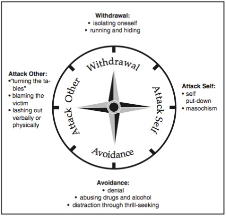

Cultural Blog
This right here
is Dr. Nathanson's Compass of Shame:

What is the Compass of Shame? It is a compass that points to four different ways that people tend to deal with shame and conflict. N, E, S, W is Withdrawal, Attack Self, Avoidance, and Attack Other, respectively. How do you usually react? Despite the name, there's no shame in admitting that you usually favor one of these coping behaviors. However, it is important to recognize that this might be how you respond in these situations. It is then easier to gauge what will be a more effective way to handle the threat than what you would have done by nature to begin with.
On that note, I will talk about a time I had an emotional conflict with someone (in this case with an institution), how I handled it, and what I can learn from it.
--What was the conflict?
I graduated from college this past May. With graduation comes the diploma. Since I entered college, I have gone by "AJ." It's my name. So when I filled out the form for the diploma, I wrote "AJ Stuhrenberg" even though under the name line is said that most people usually use their full name, including a middle name if they have one. I obviously read that bit (it was hard to miss), and had chosen otherwise. I week later I get an email confirming that that's what I want on my diploma, like I was just messing around when I had filled out the form. That annoyed me. But I just replied, "yes," and it was fine.
A couple months later I graduated. I walked across the stage and too my diploma. After the ceremony I met up with my parents. I opened the diploma, and my name was wrong. They had put my legal first name. So not only had I told them what I wanted on my diploma, but I confirmed it as well; yet, here they were handing me this.
--How did you handle that conflict?
I ranted to my parents, but I didn't really do anything because we had to leave (16 hour drive back home). But when I got home. I wrote an email to whoever I had turned the form in to. They emailed me back, and then someone else emailed me back. They said my legal first name HAD to be on the diploma. If that's the case, then why the hell did they give me the choice in the first place? So I replied with a strongly worded email.
--If you could go back, what would you do differently, if anything? And what did you learn from this experience?
In this case, I don't think I would have done anything differently only because 1. I graduated, and hopefully I'll never have to go back there, and 2. it wasn't going to get fixed anyway so I might as well tell them that I was upset. It didn't help, but it didn't not help since the conversation was pretty much over by the time I interjected.
But in general, I really try to refrain from replying to emails or texts or written anything when I'm angry or upset. Why? Because I usually come off as sarcastic and mean. And while sometimes it may make me feel better, it doesn't necessarily help the situation at all.
In personal confrontations, I usually bite my tongue, just ignore the threat, and cool down by myself. I've learned that many times after I calm down whether it be an hour later or a day later, it's best to talk about it with the other person if I really felt that strongly about whatever it was we had a conflict about. I find that to be helpful so there's no pent up resentment or lingering negative feelings.